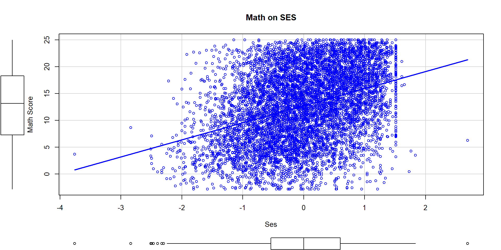
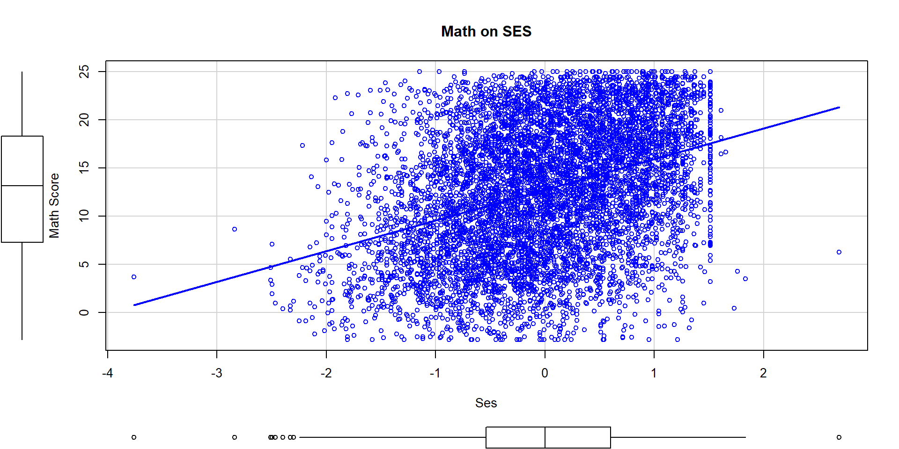
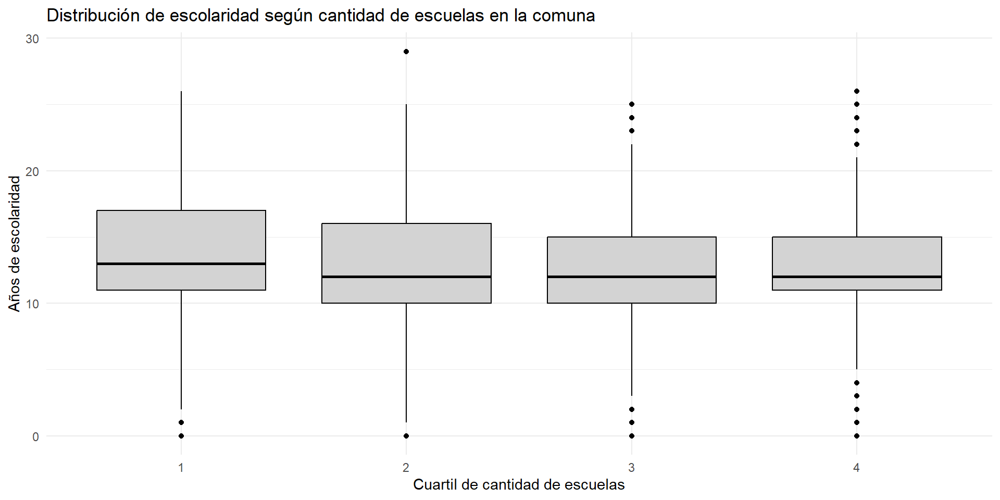
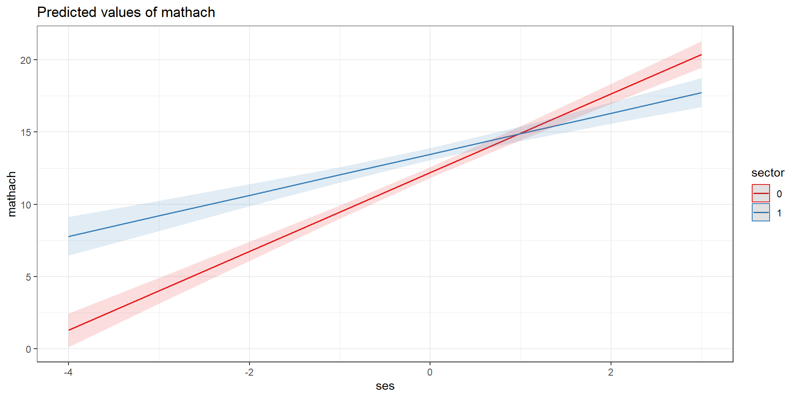

Katherine Aravena Herrera, Paula Cerda Torres & Sebastián Monreal Villarroel
Análisis de datos multinivel - 2025
Departamento de Sociología, Universidad de Chile
Santiago, 18 de Junio de 2025
[problema, objeto de estudio] Rendimiento en matemáticas decreciente y aumentan brechas por género
[factores asociados L1] Nivel socioeconómico y género de estudiantes
[factores asociados L2] Nivel socioeconómico de la escuela y composición de género de las salas de clases.
¿En qué medida el nivel socioeconómico y el género a nivel individual y de escuela afectan el rendimiento en matemática?
Nivel 1:
\(H_1\):
\(H_2\):
Nivel 2
\(H_3\):
\(H_4\):
(incluir tablas univariados por nivel)
Se estimaron un total de 6 modelos, siguientes modelos:
\[ \text{esc}_{ij} \;=\; \gamma_{00} + u_{0\text{comuna}} + r_{ij} \]
\[ \text{esc}_{ij} \;=\; \gamma_{00} + \gamma_{01}\,\text{female} + \gamma_{02}\,\text{nse_cmc} + \gamma_{03}\,\text{part_social_num} + u_{0\text{comuna}} + r_{ij} \]
\[ \text{esc}_{ij} \;=\; \gamma_{00} + \gamma_{01}\,\text{prop_empleo_gmc} + \gamma_{02}\,\text{n_escuelas_gmc} + u_{0\text{comuna}} + r_{ij} \]
\[ \text{esc}_{ij}= \gamma_{00} + \gamma_{01}\,\text{female} + \gamma_{02}\,\text{nse_cmc} + \gamma_{03}\,\text{part_social_num} + \gamma_{04}\,\text{prop_empleo_gmc} + \gamma_{05}\,\text{n_escuelas_gmc} + u_{0\text{comuna}} + r_{ij} \]
\[ \text{esc}_{ij}= \gamma_{00} + \gamma_{01}\,\text{female} + \gamma_{02}\,\text{nse_cmc} + \gamma_{03}\,\text{part_social_num} + \gamma_{04}\,\text{prop_empleo_gmc} + \gamma_{05}\,\text{n_escuelas_gmc} + u_{0\text{comuna}} + u_{1\text{comuna}}\,\text{nse_cmc} + r_{ij} \]
\[ \text{esc}_{ij}= \gamma_{00} + \gamma_{01}\,\text{nse_cmc} + \gamma_{02}\,\text{prop_empleo_gmc} + \gamma_{03}\,\text{part_social_num} + \gamma_{04}\,\text{n_escuelas_gmc} + \gamma_{05}\,\text{female} + \gamma_{06}\bigl(\text{nse_cmc}\,\times\,\text{prop_empleo_gmc}\bigr) + u_{0\text{comuna}} + u_{1\text{comuna}}\,\text{nse_cmc} + r_{ij} \]
Scatterplot: relación entre promedio comunal de escolaridad y tasa de empleo

escolaridad individual según cuartiles de escuelas comunales

`
| Nulo (ICC) | L1 (centrado) | L2 (centrado) | L1 + L2 | + Pend. NSE | + Interacción H6 | |||||||
|---|---|---|---|---|---|---|---|---|---|---|---|---|
| Predictors | Estimates | std. Error | Estimates | std. Error | Estimates | std. Error | Estimates | std. Error | Estimates | std. Error | Estimates | std. Error |
| (Intercept) | 12.308 *** | 0.293 | 12.441 *** | 0.295 | 12.435 *** | 0.242 | 12.565 *** | 0.245 | 12.568 *** | 0.243 | 12.567 *** | 0.242 |
| female | -0.398 *** | 0.049 | -0.397 *** | 0.049 | -0.398 *** | 0.049 | -0.398 *** | 0.049 | ||||
| nse cmc | 0.397 *** | 0.015 | 0.397 *** | 0.015 | 0.451 *** | 0.060 | 0.488 *** | 0.062 | ||||
| part social num | 0.744 *** | 0.074 | 0.744 *** | 0.074 | 0.729 *** | 0.073 | 0.729 *** | 0.073 | ||||
| prop empleo gmc | 19.622 *** | 3.665 | 19.567 *** | 3.694 | 18.082 *** | 3.577 | 19.576 *** | 3.688 | ||||
| n escuelas gmc | 0.001 | 0.005 | 0.001 | 0.006 | 0.002 | 0.005 | 0.001 | 0.005 | ||||
| nse cmc × prop empleo gmc | 1.871 | 1.114 | ||||||||||
| Random Effects | ||||||||||||
| σ2 | 14.15 | 13.56 | 14.15 | 13.56 | 13.37 | 13.37 | ||||||
| τ00 | 2.73 comuna | 2.74 comuna | 1.46 comuna | 1.48 comuna | 1.48 comuna | 1.48 comuna | ||||||
| τ11 | 0.09 comuna.nse_cmc | 0.08 comuna.nse_cmc | ||||||||||
| ρ01 | 0.34 comuna | 0.40 comuna | ||||||||||
| ICC | 0.16 | 0.17 | 0.09 | 0.10 | 0.11 | 0.11 | ||||||
| N | 32 comuna | 32 comuna | 32 comuna | 32 comuna | 32 comuna | 32 comuna | ||||||
| Observations | 22776 | 22706 | 22776 | 22706 | 22706 | 22706 | ||||||
| Marginal R2 / Conditional R2 | 0.000 / 0.162 | 0.032 / 0.195 | 0.088 / 0.173 | 0.122 / 0.208 | 0.116 / 0.217 | 0.128 / 0.226 | ||||||
| * p<0.05 ** p<0.01 *** p<0.001 | ||||||||||||
Likelihood-ratio test
|
|||||||
|---|---|---|---|---|---|---|---|
| modelo | npar | AIC | BIC | logLik | LRT | gl | p |
| sin pendiente | 8 | 123783.5 | 123847.7 | -61883.73 | NA | NA | NA |
| con pendiente | 10 | 123536.1 | 123616.4 | -61758.06 | NA | NA | NA |
| LRT | NA | NA | NA | NA | 251.329 | 2 | 0 |
| χ² significativo (p < 0.001) ⇒ conviene dejar la pendiente de NSE como aleatoria | |||||||

La interacción muestra que…